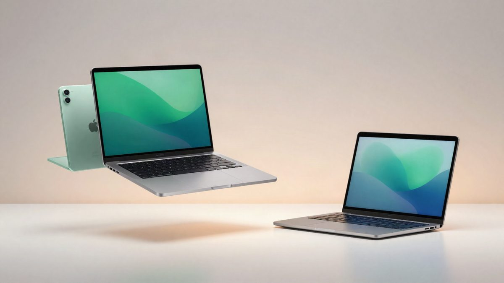

Apple 29. listopada održava event: stižu OLED MacBook Pro i iPad mini 8

Apple je najavio događaj za 29. listopada i dao do znanja da će novosti stići već idući tjedan. Prema ranijim informacijama, na njemu bi se mogli pojaviti MacBook Pro s OLED zaslonom i M6 čipom, iMac s M6 čipom te iPad mini 8 s OLED ekranom. Prodaja bi, prema navodima, mogla krenuti 6. studenoga.
Event će biti u Angelesu. Na kineskoj društvenoj mreži Xiaohongshu Apple je poručio: „好多好消息，下周和你说", što sugerira da novosti stižu već idući tjedan.
Popis uređaja Apple još nije objavio. Ranije informacije iz industrije upućuju na Mac i iPad liniju: MacBook Pro s OLED zaslonom, 14-inčni MacBook Pro s novim M6 čipom i iMac također s M6 čipom. Na popisu je i iPad mini 8 s OLED ekranom.
Ako se ti proizvodi doista pojave, OLED na većim ekranima i novi M6 silicij bit će zanimljiv pomak za Appleove laptope i tablete. Tko čeka osvježenje Macova, mogao bi dobiti prve konkretne detalje o sljedećoj generaciji.
Prodaja bi, prema ranijim navodima, mogla krenuti 6. studenoga. Apple ni taj datum ni konkretne modele zasad nije potvrdio, pa sve ovisi o tome što tvrtka pokaže na događaju.
Izvor: ITHome (IT之家)